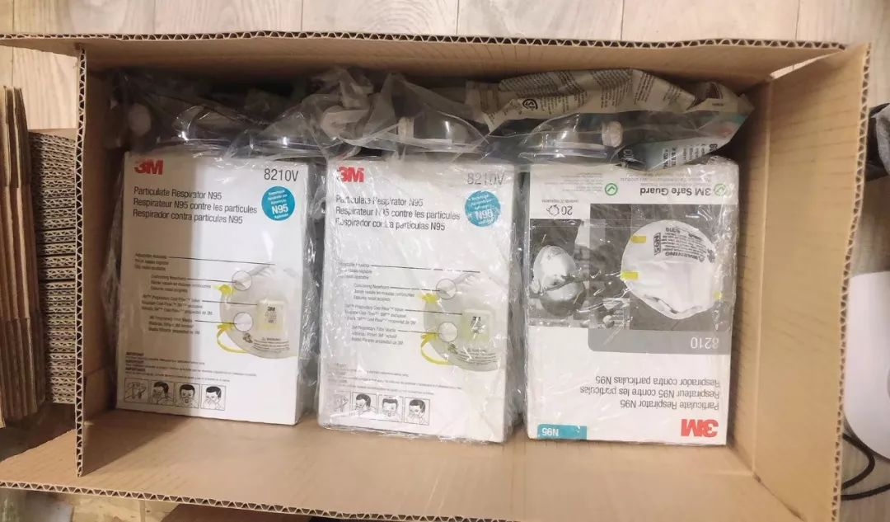
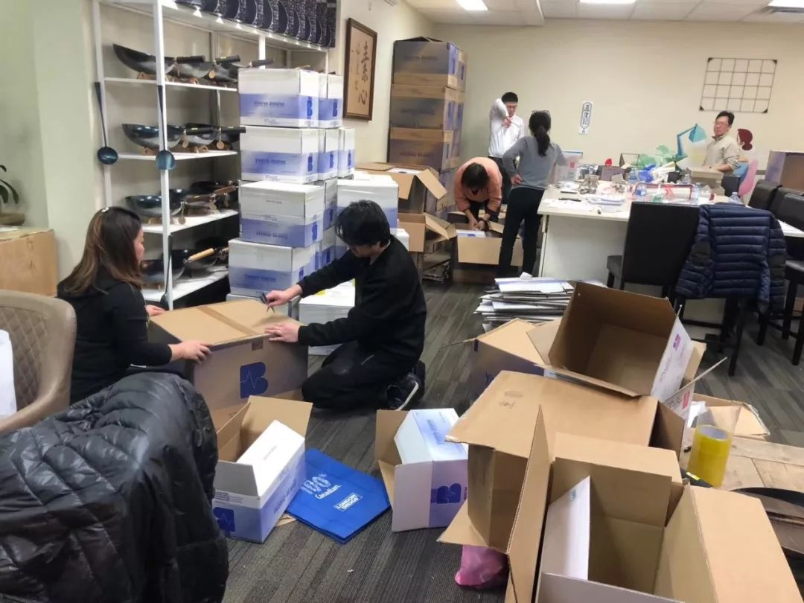

湖北物资频频告急，民间捐赠的激情与困境
原文链接 备份链接 向风暴眼输送防护物资并非易事武汉市中心医院医生发布微博求助，希望社会各界捐物资。图源：微博截图 2月12日晚，武汉中心医院的一位医生在微博发出求助。 这位身穿防护服的医生对镜头说，医用N95没有了，只能戴工业口罩，医 …

从搜集到运输，每一个关卡都会出现意想不到的困难。经历了被提价、被毁约、被骗等种种意外之后，海外华人机智地趟出了自己的线路。但情况瞬息万变。仍然有一些海外物资，因为各种各样的原因，还在赶往武汉的路上，不知何时抵达。
文***｜*******韩逸
编辑***｜*******萧祷
1
「一箱给我们100美金，我们就放行。」2月7号，俄罗斯莫斯科谢列梅捷沃机场门口，30箱口罩因为「文件不符」，滞留在海关，进退两难。
这情形对吉米来说并不陌生，在这之前，他有5万只口罩因为手续不全，在俄罗斯海关遭到同样的拒绝。
大宗物资出关，要准备各种证书和文件。正规发票、许可文件、计税资料等等，需要很长的周期。俄罗斯提供给救援物资的绿色通道可以免除这些手续，但也需要提供国内省一级的受捐证明，吉米没有。只是，罚款的交易地点在机场里面的厕所，吉米因此断定，这是俄罗斯部分警察的私人行为，「不合法。」
不过即便放到国内，那也的确不算是一批「合规」的物资。型号上，只是普通的医用一次性口罩，无法帮助医生直面疑似病人，也不在武汉现阶段大部分定点医院的求助物资清单之内，不属于一级物资。手续上，它也缺少可以顺利通关的保障——一纸省级红十字会开具的，盖着公章的接收函。
即便是不合规的物资，在前线都是一件难求。武汉一家民营医院的医生李平，春节之后一口气加了十几个志愿者群，每天在里面填写报备信息，反复更新物资需求，「怕只发一遍，人家看漏了。」
他所在的医院因为没有防护物资，停业了十几天，直到2月11日才重新开门。医生穿着企业捐赠的工业防护服，步子迈大了，裤裆的位置会裂开，「再薄就可以做宣纸了。」因为没有脚套，同事把垃圾袋绑在脚上，路走多了，也会松开。但最缺的还是口罩，停业那天，医院里一个N95都没有了。
借着医生身份的便利，李平在小区封闭后仍然可以出入，他索性报名做了运输物资的志愿者。帮其他医院送防护物资的同时，也为自家医院的需求吆喝，「不符合医用标准的，大医院不收，我们也需要。」
找到合规的口罩并不容易。俄罗斯医用口罩的标准不同于欧标和美标，一些有认证和授权的正规医疗物资厂家，也无法提供符合中国认证标准的口罩。
从1月24日得知武汉物资不足的消息开始，吉米所在的俄罗斯华人圈子就组建了筹集物资的微信群。当天晚上，群成员从十几人迅速增加到一百多人，直到后来接近三百人。一部分人负责找货，一部分人确定标准。他们一一询问网上搜得到的医药厂家联系方式，拿到物资样品表，翻译给国内的医生，确定可以使用后，把链接公布到群里供志愿者们认购。

医生在微信群发布需求，指导采购。图源受访者
采购近乎于「抢」。从初三到初七，几乎所有发出来的链接都会被瞬间买光。捐款一些来自企业，也有的捐款人是当地华人白领和没有收入的留学生。甚至有部分来自国内，一位留学生的母亲试着给吉米微信转账，因为儿子就在圣彼得堡读书，「想替他出一份力。」
采购的速度追不上飞涨的价格。一批在1月27号采购的符合国内N95标准口罩，约定的发货日期推迟了两次，一周后吉米接到厂商客户经理的电话，「最低价109卢布（每只）给你。」接近之前售价的两倍。
吉米发了火。这是他公司长期合作的供货商，他找到熟悉的大客户经理理论，并准备起草律师函，对方才在多方协调下把价格定在了90卢布，上涨了50％。
着急募集物资的吉米最终接受了这个价格，收购了6000只N95标准口罩。因为符合医用标准，这些口罩最终顺利捐赠给湖北省慈善总会。
曾经被拦在机场门外的5万只口罩也经历了平生最大规模的提价。1月27日，吉米在网上订购的时候，一次性医用口罩N50的售价还是1.25卢布一个，合人民币不到一毛五分。2月5日，同类口罩的价格已经到了20卢布，「物价哄抬了十几倍。」
只是这5万只口罩没有那么好的运气。警察要的罚款是口罩本身价格的三倍还多，最终它们被原路拉回临时仓库。
那天晚上，莫斯科的气温是零下八度，吉米记得很清楚，下着雪。
2
大洋彼岸，温哥华的物资几乎是在同一时间紧俏了起来。
年三十的下午，广州第二人民医院耳鼻头颈外科医生彭宏得到前方的消息，口罩和护目镜严重不足。她向温哥华的志愿者组织发出了求救，本来是趁休假到温哥华看望母亲的，可她改签了最早回国的机票，「要回战友身边去。」
做物流的阿康看到，马上在朋友圈里号召伙伴们捐出自己家里有的存货，想让她作为随身行李带回去用。整个年三十，阿康都是在办公室里度过的，不断有人开车从周边的城市过来送物资，最小的一笔，是一位华人网友在所在城市买到的5个护目镜，还是工业用的。
大年初一的晚上八点，志愿者们把这些物资分箱打包，装了整整5箱，把物资送到彭宏医生家里，为了减少感染，彭宏已经剪掉了长发。她妈妈因为担心女儿，哭肿了眼睛。看到这5箱物资，这个女医生也哭了。
到了机场，航司为她额外增加了两人份的行李额度，这批物资跟她回到了医院。
阿康的朋友圈还在不断出现新的求救信息。1月26日开始，武汉一线的协和医院更新了第二版物资清单，配文戳痛了她的心。「不是告急，是没有了！」

温哥华志愿者捐赠的部分口罩 图源受访者
群成员继续采购护目镜和防护物资，一边在网上下订单，一边零星买。这里50个，那里100个。一个在上海做医生的志愿者，作为采购标准顾问，实时指导。程序员、媒体工作者、医生、老师、企业白领……几天之内，各行各业的志愿者凑成的物资采购小组从什么是防护面屏都不知道，变成了熟记护目镜和防护面屏标准的老手。
与此同时，他们在大温哥华地区各个群里吆喝找「人肉」运送，请人帮忙带回国内，「有一箱算一箱，送到最急的地方去。」
情况每天都在变。2月2日，首都航空和四川航空取消了温哥华回国内城市的部分航班。阿康知道后，坐在办公室里「傻掉了」。手上还有一批各处送来的物资，如果都停航了怎么办？下午三点，她查到晚上12点半有东航MU598从温哥华回上海的航班，在朋友圈找到了两个愿意带货的人。
紧接着，她经历了「永生难忘的7个小时」。十几个志愿者开车赶到她的办公室和她一起打包，其中有些人从未谋面。打包到一半，她才发现自己连足够的胶带都没有，只能跑出门现买。
晚上10点，一群人带上所有箱子，这并非两位志愿者能「人肉」的量，他们还是决定去机场安检区碰碰运气。
在值机柜台，他们找到了早就等在那里的两位志愿者。下一个东方面孔是准备回上海的中年男人，不用多做解释，他看见箱子就马上明白了，「我知道了，给我箱子就好了。」接着是答应帮忙的一家三口，又解决了三个箱子。
半个小时里，阿康和临时召集来的伙伴把7箱物资先后送上了传送带。在上海浦东机场，志愿者在那里等着他们，准备把物资运到湖北，再接力送去联系好的医院。「我们在这之前是陌生人，很多人从来没见过面。」所有箱子外面的落款都是同一个：温哥华华人。阿康觉得，箱子上写着的「武汉加油」说明了一切。

美国志愿者打包物资 图源受访者
3
在这场物资接力中，王军和他的本地志愿者队伍扮演着最后一棒的角色。他们联系医院开具通行证和接收函，寻找志愿者，把运达武汉的货物派发到指定的医院。
王军是湖北人，今年回武汉过年，封城之后，他开始着手对接捐助方和需要资源的医院。大年初四之后，他组建了一支临时车队，取名零零一救援队。
全市禁行之后，机场附近的一公里成了最难解决的问题之一。在武汉市内和各个郊区，志愿者可以申请到专门的通行证，但如果要出入机场，必须要机场专用通行证，一日一办。这类通行证只能由定点医院向指挥部提交申请，写明接物资的具体位置，接收医院地址、接收人的身份和联系方式，本人到指挥部领取盖章原件。
公益车队分为两批，一批私家轿车居多，专门接送医护人员上下班，之前感染去世的志愿者何辉就在这批队伍里。另一批专门接送医疗物资，SUV、商务车和面包车居多，但这一类车辆的运力也有限，遇到大宗物资，显得非常吃力。
2月初，日本海外华人筹集了一批重达4吨的物资。王军车队里的秦雨2日接到了这个任务。定向医院的名单发过来时，她正在九州通仓库拉物资，只大略扫了一眼，名单里有一家民营医院，她有印象。
正巧李平打电话给她，他所在的医院和那家民营医院名字很像。秦雨也没多想，赶紧告诉他，「有一批你们的物资，能不能帮我搞几台货车？」
听说有物资，李平迅速联系了一辆4.2米长的厢式货车，办好了5号进出机场的通行证。但到了4号晚上，秦雨发现两件事：一是飞机7号才来，二是定向捐赠的名单里没有李平的医院，她搞错了。
海外捐助的物资往往数额庞大，定向捐赠更是占了大多数，志愿者一瞬间接收的信息、需要协调的事情很多。秦雨跑进所有志愿者群，请求大家从这批物资里匀出一批哪怕一点点给李平，但群里回复，这是定向捐赠的物资，坚决不能给。

一批采购自境外的医用口罩抵达国内机场。图源海关发布新浪微博
秦雨还是硬着头皮打了李平的电话。听到这两个坏消息，李平确实没法掩饰生气和失望，但还是答应，一定把7号的通行证办下来，帮助武汉的其他医院运送物资。
7号晚上不到8点，他们就赶到了机场仓库，等到晚上11点，货才运到。那天天很冷，装完车回到市区，已经是凌晨两点多钟。
没有休息几个小时，李平又爬起来，载着一部分物资开到几家定点医院。为了减少医院里医生出门造成感染的可能性，他把车子直接停在感染科楼下，再帮忙把物资搬到科室门口。接收函中的医生签字确认后，他再拍照反馈给捐赠方。搬运货物的时候，他身边经过了一个路人，看到箱子上满满的日文，还有那句「风月同天」。
秦雨发动了自己认识的所有组织和机构，想为李平的医院募集一点物资。「别的大医院不要的，嫌差的，都可以。」她的邻居看到了她的朋友圈，把美国朋友寄来的40个N95口罩送给了她。秦雨立刻决定，把这40个口罩，加上之前王军为志愿者配备的100个N95，一起送给李平。在这之后，她又找来了一批护目镜和防护服。4天之内，李平的医院开门营业，当天就接诊了4个感染者。他在朋友圈里发了一条状态，解释想开门营业不是为了赚钱，「我的一切都在武汉。我的家人、我的朋友、我所有的记忆。与其躲避，不如全力进攻，这是守护他们唯一的办法。」
几天之后，李平又告诉她，「我们已经接到16个病人了。」
「哪怕抢救一个病人，这个家庭就保住了。」秦雨觉得值得，在7号的那批物资里，他们最终匀出1000片一次性医用口罩，送给了李平。这是这家医院十几天来，收到的数量最大的一批防护物资。
除了本职工作，李平还在忙着接送最新抵达武汉的口罩。他已经忘了不戴口罩走在阳光下的感觉，「只想等到春暖花开，疫情退去，我要摘了口罩，好好吸一口气。」

武汉市民自费成立爱心车队运输抗疫物资。图源梨视频
4
吉米停在俄罗斯海关的那批口罩，本来是要寄给此前民间救援物资暂时无法触达的地区医院。她发现，即便是这样的普通医用口罩，莫斯科也买不着货了。
就算她们筹到更多资金，口罩也越来越难买到。一开始，大家都先刷自己的卡救急，再开发票报销，但是额度很快不够垫付了。可转为先确定捐赠资金意向再拿货之后，出现了新的问题，往往国内刚说「要」，国外的货已经被人买走。
志愿者小安找到了价值几十万元的货源，必须几个小时之内付款到土耳其的厂方的银行卡号上。但出资方没有香港账户，无法直接转外币，加上时差原因，最终还是小安先筹钱垫付。
如果交易金额超过10万美金，就只能通过外贸公司对公转账。有一些大的慈善基金会有能力支付，但内部还有较为复杂的审批流程，走得稍微慢一点，货源马上就没了。后来，信任小安的朋友直接交出了决定权，「10万加币以内的物资，不要问，直接买。」
「黑市都有口罩了。」小安发现，自从口罩成为硬通货，出现了一些抢囤口罩的人。她在土耳其黑市找到的口罩，开始不到10元人民币一个，现在已经飞涨到6.5美金。不包物流，现款现货。而吉米商定的一批防护服，本来已经从50块讲到40块人民币一件，但第二天付款的时候，对方说，100块一件，你们不要马上有人收走。
即便被毁约成了家常便饭，价格飞涨仍然是最容易解决的问题。「钱不是问题。」美国华人基金会NACCF理事Sharon从2月6日就开始焦虑，「问题是，没有口罩了。」
她试遍了所有能够找得到的「门路」。发动高校学生，在网上搜索货源；联合康涅狄格州对冲基金联盟和格林尼治医院基金会在美东地区各大医疗机构募集医疗物资；飞到柬埔寨、印度和南美，联系海外一切正在生产口罩的厂商。
反馈回来的消息并不乐观，到处都被采购一空。
2月9日，加拿大的阿康和伙伴们筹集到大温哥华地区相对大宗的一批物资，集中走货运。为了保证物资顺利抵达，每一个纸箱都配上了对应医院的详细物资接收函。为了给一线志愿者节省时间和精力，每件物资外面都贴好了捐赠方和收件方的详细信息，并把国内运送的顺丰单号条形码贴上去。志愿者们花了4个小时，把几百箱大小各异的物资重新打包，在筹集的善款到账之前，不少人刷爆了自己的信用卡。

温哥华志愿者在打包物资。图源受访者
第二天，这124箱物资飞抵青岛。这些护目镜和面罩回国之后，将作为定向捐赠，通过物流公司开辟的绿色通道，直接寄到吉林、河南、河北、湖南、湖北、广州、珠海、上海、江苏、安徽、浙江和北京的40多家医院中。
阿康和伙伴们准备，在这批物资之后，继续搜集可用的物资信息，提供给国内有需要的爱心企业。
合规的一级医用物资越来越少，一部分不甘心的志愿者展开了近乎地毯式排查的扫货，发现一家只有30个护目镜的连锁店，就把当地所有门店的清单拉出来，让群内的志愿者就近找货。与此同时，他们对各种防护物资的标准也一再降低，「早知道上星期下单的10900件400（非医用防护服型号）应该拿下，再配上涂塑料层的罩衣应该也能抵挡一下。」
2月开始，各国停航的消息陆续传来，温哥华能够找到舱位的航班越来越少。吉米也得到其他志愿者从俄罗斯各机场发出的坏消息，只要是物资行李超额，会在进入机场前被直接拦下，「凡是装物资的纸箱子」就是认缴罚款也不能进绿色通道了。
为把这些「不合规」的物资发回国内，「人肉」带回的工作还在继续。发到国内城市，要请志愿者开车去接，拉到当地邮局，再寄到指定医院。因为时间紧急，资料准备不足，只有红十字会开具接收函后所能使用的通道才是免费的，其他通道（包含慈善总会）都需要收费，有一位上海志愿者，为了物资能够送达指定的医院，自掏4500元支付了26个箱子的运费。
有的姑娘从多伦多搭飞机专门跑到温哥华，就为了多带一箱物资。也有人什么随身物品都不带，把所有的重量额度都留给物资。他们都不愿意提自己的名字，志愿者给这些人起了一个统一的昵称，叫「爱心肉肉」。
情人节这天，从温哥华时间的凌晨到中午，三个航班再次载着42箱防护物资回到国内，由「爱心肉肉」们带回，再由接机志愿者寄往湖北黄冈。这些物资中，很多并不能达到最高级的医用标准，会标注着「非医用级别防护服」。但是前线传来确定的消息，他们需要。
也是在同一天，吉米终于等到了合适的舱位，把5万只口罩和其他物资一起发回了国内，他期盼这些不能上一线的口罩，可以给国内还在裸奔的社区工作者和疑似病患提供最基础的防护。
一周以来，因为迟迟没有新的物流信息，5万只口罩的捐赠者每天都会关注口罩的动态，捐赠者一度担心，口罩是不是被素不相识的吉米用来售卖了。两天前，他打电话给吉米，要求退还那批口罩，自己想办法寄给北京的朋友。吉米告诉他，那批口罩已经在准备清关了。
2月16日，5万只口罩降落北京。

机场海关快速验放防疫物资。图源海关发布新浪微博
（应采访对象要求，吉米、李平、阿康为化名。）
没看够？
长按二维码关注《人物》微信公号
更多精彩的故事在等着你

原文链接 备份链接 向风暴眼输送防护物资并非易事武汉市中心医院医生发布微博求助，希望社会各界捐物资。图源：微博截图 2月12日晚，武汉中心医院的一位医生在微博发出求助。 这位身穿防护服的医生对镜头说，医用N95没有了，只能戴工业口罩，医 …
原文链接 备份链接 医院人员领取志愿者送的医疗物资。受访者供图 文 | 李晓芳 编辑 | 胡大旗 新型冠状病毒肺炎疫情扩大后，湖北省内的医院医疗物资告急。从1月23日开始，很多医院自行发布物资募捐公告。几乎同一时间，各种民间力量行动起来， …
原文链接 备份链接 图片来源：海洛创意 记者：梁宙 “ 武汉一线医护人员物资仍有较大缺口，湖北省卫生计生宣传教育中心通过官方微信公号“健康湖北”发布了武汉各大医院的接受社会捐赠公告。其中，有的医院求援公告已更新至第五版。 ” 武汉一线医护 …
原文链接 备份链接 【财新网】（记者 张子竹 实习记者 黄雨馨 陈丽金）“我们的N95口罩每天消耗5500多个，防护服4000多套。由于消耗量很大，而且目前没有稳定的供应来源，所以现在这方面（医用物资）十分紧缺。”2月6日，湖北省随州市 …
原文链接 备份链接 ********** *****现在，志愿者们已经对各类口罩如数家珍。1月底，一家东莞工厂表示有一批口罩。“那是工业级别的N95，不能给医生用。”程雨拒绝了。“不能让热心被利用，也不能给医院制造麻烦。”她说。***** …